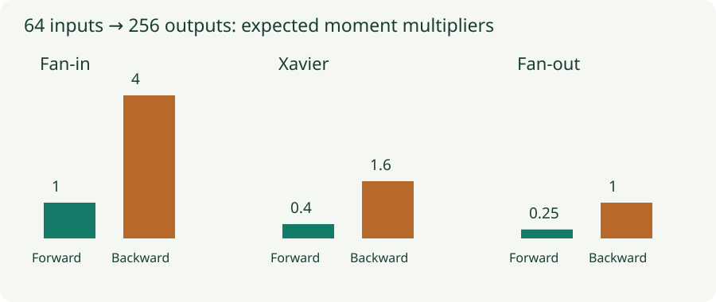

Xavier and LeCun Initialization: Count the Inputs and Outputs
Derive fan-in, fan-out, and Xavier variances from forward and backward sums, convert variance into uniform bounds, and count connections in dense and convolutional layers.
Fan-based initialization sets a layer’s weight variance $v=\operatorname{Var}(W_{ij})$ by counting how many terms each matrix multiplication sums: LeCun preserves forward scale, fan-out preserves backward gradient scale, and Xavier (Glorot) balances the two.
1. Forward sums ($n_{\rm in}$) vs. backward sums ($n_{\rm out}$)
Consider a linear layer $z=Wa$ with $W\in\mathbb R^{n_{\rm out}\times n_{\rm in}}$, zero-mean independent weights of variance $v$, and uncorrelated inputs of second moment $q$:
- Forward pass (LeCun / fan-in): Each output $z_i=\sum_{j=1}^{n_{\rm in}}W_{ij}a_j$ sums $n_{\rm in}$ inputs, so $\mathbb E[z_i^2]=(n_{\rm in}v)\,q$. Setting $n_{\rm in}v=1$ gives LeCun initialization:
$$v_{\rm fan\text{-}in}=\frac{1}{n_{\rm in}},\qquad\operatorname{std}(W_{ij})=\frac{1}{\sqrt{n_{\rm in}}}.$$
- Backward pass (fan-out): Each input gradient $g_{{\rm in},j}=\sum_{i=1}^{n_{\rm out}}W_{ij}g_{{\rm out},i}$ sums $n_{\rm out}$ upstream gradients, so $\mathbb E[g_{{\rm in},j}^2]=(n_{\rm out}v)\,\mathbb E[g_{\rm out}^2]$. Preserving backward coordinate scale requires:
$$v_{\rm fan\text{-}out}=\frac{1}{n_{\rm out}},\qquad\operatorname{std}(W_{ij})=\frac{1}{\sqrt{n_{\rm out}}}.$$
When $n_{\rm in}=n_{\rm out}$, both rules match. When a layer expands from $n_{\rm in}=64$ to $n_{\rm out}=256$, fan-in scaling ($v=1/64$) keeps forward scale at $1\times$ but multiplies backward gradient second moments by $256/64=4\times$; fan-out scaling ($v=1/256$) keeps backward scale at $1\times$ but shrinks forward moments to $64/256=0.25\times$.
2. Xavier initialization balances both multipliers
To compromise when $n_{\rm in}\ne n_{\rm out}$, Glorot and Bengio require the average of the forward multiplier $n_{\rm in}v$ and backward multiplier $n_{\rm out}v$ to equal $1$:
Note that $v_{\rm Xavier}$ is the reciprocal of the average fan count (the harmonic mean of $1/n_{\rm in}$ and $1/n_{\rm out}$), not their arithmetic mean. On the $64\to 256$ layer, $v_{\rm Xavier}=2/320=0.00625$, giving forward multiplier $64(0.00625)=0.4$ and backward multiplier $256(0.00625)=1.6$, whose average is $(0.4+1.6)/2=1$.

3. Converting variance to uniform bounds ($\sqrt{3}$ and $\sqrt{6}$)
Why does Xavier uniform use $\sqrt{6}$ in the numerator while Xavier normal uses $\sqrt{2}$? A random variable $W_{ij}\sim\operatorname{Uniform}(-a,a)$ has density $\frac{1}{2a}$ on $[-a,a]$, mean $0$, and variance
Multiplying any normal standard deviation $\sqrt{v}$ by $\sqrt{3}$ gives the variance-matched uniform bound $\pm a$:
| Method | Target variance $v$ | Normal $\operatorname{std}=\sqrt{v}$ | Uniform bound $\pm a=\pm\sqrt{3v}$ |
|---|---|---|---|
| LeCun (fan-in) | $1/n_{\rm in}$ | $1/\sqrt{n_{\rm in}}$ | $\pm\sqrt{3/n_{\rm in}}$ |
| Xavier (Glorot) | $2/(n_{\rm in}+n_{\rm out})$ | $\sqrt{2/(n_{\rm in}+n_{\rm out})}$ | $\pm\sqrt{6/(n_{\rm in}+n_{\rm out})}$ |
| Fan-out | $1/n_{\rm out}$ | $1/\sqrt{n_{\rm out}}$ | $\pm\sqrt{3/n_{\rm out}}$ |
4. Lab: compare expected and measured amplification
Test how $n_{\rm in}$, $n_{\rm out}$, and the variance rule affect a single rectangular linear layer:
One rectangular linear layer
Change the input and output widths and choose a rule. A sampled Gaussian weight matrix processes 256 Gaussian input vectors and backpropagates 256 independent Gaussian output directions. Bars compare the theoretical second-moment ratios with measured ratios.
5. Fan counts for dense and convolutional layers
- Dense layer (
weightshape $[n_{\rm out}, n_{\rm in}]$): $n_{\rm in}$ is the second dimension and $n_{\rm out}$ is the first. - Conv2d layer (
weightshape $[C_{\rm out}, C_{\rm in}/G, k_h, k_w]$ with $G$ groups): Each output pixel sums over a $k_h\times k_w$ spatial patch across $C_{\rm in}/G$ input channels, so$$n_{\rm in}=\frac{C_{\rm in}}{G}k_hk_w,\qquad n_{\rm out}=\frac{C_{\rm out}}{G}k_hk_w.$$
# PyTorch Linear stores weight as [out_features, in_features]
torch.nn.init.xavier_uniform_(layer.weight, gain=1.0)
if layer.bias is not None:
torch.nn.init.zeros_(layer.bias)
# Explicit LeCun normal (used with SELU or forward-preserving linear layers)
torch.nn.init.normal_(layer.weight, mean=0.0, std=1.0 / math.sqrt(layer.in_features))6. Questions worth answering
No. Xavier averages the fan counts in the denominator—$v=2/(n_{\rm in}+n_{\rm out})$—which is the harmonic mean of $1/n_{\rm in}$ and $1/n_{\rm out}$ and guarantees $\tfrac12(n_{\rm in}v+n_{\rm out}v)=1$.
Matching $\operatorname{Var}(\operatorname{Uniform}(-a,a))=a^2/3$ to $v_{\rm Xavier}=2/(n_{\rm in}+n_{\rm out})$ gives $a=\sqrt{3v_{\rm Xavier}}=\sqrt{6/(n_{\rm in}+n_{\rm out})}$.
Xavier assumes zero-centered activations with unit slope near zero ($\phi(z)\approx z$, such as linear or small-signal $\tanh$). For ReLU, which zeros out negative inputs, it loses half the signal energy per layer—handled by He initialization next.
Sources
Glorot and Bengio, Understanding the Difficulty of Training Deep Feedforward Neural Networks; LeCun et al., Efficient BackProp; Klambauer et al., Self-Normalizing Neural Networks; PyTorch initialization documentation.